수질환경기사 (2004-03-07 기출문제)
1과목: 수질오염개론
1. 해수의 염분에 관한 옳은 설명은?
- 해수중 염소이온농도는 일반적으로 8000 - 9000mg/L 정도이다.
- 염분이란 해수중 녹아 있는 무기 전해질의 양을 말한다.
- 해수의 염분농도는 25-30‰ 범위이다.
- 수심이 깊어짐에 따라 염분농도가 높아진다.
(정답률: 알수없음)

2. 다음은 증류수의 빛투과도(light transmission)을 수심에 따라 나타낸 것이다 그림에서 Ⓐ-Ⓑ-Ⓒ 순으로 색깔이 알맞게 짝지어진 것은?
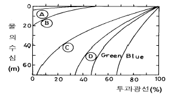
- Violet-Yellow -Red
- Red-Orange -Yellow
- Yellow-Orange -Violet
- Orange-Red -Violet
(정답률: 알수없음)
3. 다음 중 해수의 특성이라고 볼 수 없는 것은?
- pH는 약 8.2 정도이며 bicarbonate의 완충용액이다.
- 해수의 주요성분 농도비는 일정하다.
- 해수의 Mg/Ca비는 담수보다 높다.
- 80% 이상의 질소는 유기질소형태를 갖는다.
(정답률: 알수없음)
4. Ca(OH)2 100㎎/L 용액의 pH는 얼마인가? (단, Ca(OH)2는 완전 해리하는 것으로 한다. Ca(OH)2의 분자량 = 74)
- 11.43
- 11.63
- 11.93
- 12.23
(정답률: 알수없음)
5. BOD5=300mg/ℓ 이고 COD 가 450 mg/ℓ 인 경우 생물학적으로 분해 불가능한 COD는 얼마인가? (단, 상용대수적용, K1 = 0.2/ day)
- 1⑤.5 mg/ℓ
- 116.7 mg/ℓ
- 127.8 mg/ℓ
- 134.3 mg/ℓ
(정답률: 알수없음)
6. 친수성 콜로이드에 관한 설명으로 알맞지 않은 것은?
- 수막 또는 수화수를 형성시킨다.
- 물속에 서스펜션(Suspention)으로 존재한다.
- 매우 큰 분자 또는 이온상태로 존재한다.
- 전해질에 대한 반응이 약하므로 전해질이 더 많이 요구된다.
(정답률: 65%)
7. 온도가 20℃인 물을 수포식으로 폭기하고자 한다. 직경 3mm인 수포가 4m/sec의 속도로 낙하할 때 산소전이계수(m/sec)는? (단, 분자확산계수 1.8× 10-9 m2/sec )
- 4.77× 10-5 m/sec
- 5.77× 10-5 m/sec
- 6.77× 10-5 m/sec
- 7.77× 10-5 m/sec
(정답률: 알수없음)
8. 우리나라의 하천에 대한 옳은 설명은?
- 최소 유량에 대한 최대 유량의 비가 작다.
- 유출시간이 길다.
- 하천 유량이 안정되어 있다.
- 하상 계수가 크다.
(정답률: 90%)
9. 유량이 1.6m3/sec이고 BOD5가 5mg/L, DO가 9.2mg/L인 하천에 유량이 0.8m3/sec이고 BOD5가 50mg/L, DO가 5.0mg/L인 지류가 흘러 들어 가고 있다. 이 하천의 유속이 900m/hr이면 하류 54km지점에서의 용존산소 부족량은? (단, 온도 20℃, 혼합수의 k1=0.1/day, k2=0.2/day혼합수의 포화산소농도는 9.17mg/L, 상용대수 적용)
- 약 6.4mg/L
- 약 7.6mg/L
- 약 8.7mg/L
- 약 9.1mg/L
(정답률: 알수없음)
10. 미생물 세포의 비증식 속도를 나타내는 식의 설명이 잘못된 것은 ?
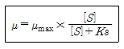
- μ max는 최대 비증식속도로 hr-1단위이다.
- Ks는 1/2μ max때의 기질 포화 농도이다.
- μ = μ max인 경우, 반응속도가 기질농도에 비례하는 1차반응을 의미한다.
- [S]는 제한기질 농도이고 단위는 ㎎/ℓ 이다.
(정답률: 알수없음)
11. 다음은 해수의 함유성분들이다. 이들 중 해수에 가장 적게 함유된 성분은 ?
- SO42-
- Ca2+
- Na+
- Mg2+
(정답률: 알수없음)
12. 다음은 어떤 수질의 분석결과이다.경도(㎎/L as CaCO3)는 얼마인가? (단, 원자량 : Ca-40, Mg-24, Na-23, Sr-88)
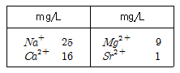
- 52
- 79
- 94
- 108
(정답률: 알수없음)
13. 생분뇨의 BOD: 19,500ppm, 염소이온 농도: 4,500ppm이며, 정화조 방류수의 염소이온 농도는 225ppm 이었다면 방류수의 BOD농도가 120ppm일때 정화조의 BOD제거효율은?
- 72.5%
- 81.7%
- 87.7%
- 92.5%
(정답률: 알수없음)
14. 염소살균처리에 관한 내용 중 틀린 것은?
- 염소의 살균력은 낮은 pH에서 강하다.
- 클로라민은 THM을 형성하며 살균작용의 지속능력이 낮다.
- 살균능력은 클로라민< OCl- < HOCl 순이다.
- 수중에 암모니아가 존재하면 염소와 반응하여 클로라민을 형성한다.
(정답률: 알수없음)
15. 다음 중 경도(Hardness)에 관한 설명에서 틀린 것은?
- 일반적으로 칼슘이온과 마그네슘이온이 경도의 주원인이 된다.
- 경도는 물의 세기정도를 말하며 2가 이상 양이온금속의 함량을 탄산칼슘(CaCO3)의 농도로 환산한값이다.
- 표토층이 얇거나 석회암층이 존재하는 곳에서 경도가 높은 물이 생성된다.
- 탄산경도 성분은 물을 끊일 때 제거되므로 일시경도라 한다.
(정답률: 알수없음)
16. 하천수질에 영향을 주는 각종 환경요인을 고려하여 수학적인 형태로 표현된 식을 적용, 장래 수질의 예측 등을 할 수 있는 모델중 Streeter - Phelps model에 관한 설명으로 틀린 것은?
- 점오염원으로부터 오염부하량 고려
- 하천 수질 모델링의 최초
- 유기물 분해로 인한 용존산소소비와 대기로 부터 수면을 통해 산소가 재공급되는 재폭기 고려
- 유속,수심,조도계수 등에 의한 기체 확산계수 고려
(정답률: 73%)
17. 25% NaOH 용액은 몇 N용액인가?
- 12.36N
- 10.32N
- 8.56N
- 6.25N
(정답률: 55%)
18. 다음중 응집을 일으키는 화학적 반응기작과 거리가 먼 것은?
- 이중층의 압축(double layer compression)
- 체거름(enmeshment)
- 가교작용(interparticle bridging)
- 제타전위의 상승
(정답률: 알수없음)
19. 내경 3mm의 유리관을 정수중에 세웠을 때 모세관현상으로 물이 관내를 올라간 높이는? (단, 표면장력은 75.64 dyne/cm이며 물과 유리의 접촉각은 0° 으로 한다)
- 약 0.5cm
- 약 1.0cm
- 약 1.5cm
- 약 2.0cm
(정답률: 알수없음)
20. 조류제거를 위하여 살포하는 황산동의 투입량 결정시 고려되는 인자와 가장 거리가 먼 것은?
- pH
- 수온
- 용존산소
- 알칼리도
(정답률: 알수없음)
2과목: 상하수도계획
21. 깊은 우물의 배치에 관한 설명으로 가장 알맞는 것은?
- 우물을 2개 이상 설치할 경우에는 일반적으로 지하수의 흐름방향과 직각으로 배치하거나 혹은 H자 모양으로 배치한다.
- 우물을 2개 이상 설치할 경우에는 일반적으로 지하수의 흐름방향과 직각으로 배치하거나 혹은 Z자 모양으로 배치한다.
- 우물을 2개 이상 설치할 경우에는 일반적으로 지하수의 흐름방향과 수평으로 배치하거나 혹은 H자 모양으로 배치한다.
- 우물을 2개 이상 설치할 경우에는 일반적으로 지하수의 흐름방향과 수평으로 배치하거나 혹은 Z자 모양으로 배치한다.
(정답률: 29%)
22. 배수지에 관한 설명 중 맞는 것은?
- 배수지가 급수지역의 중앙에 있으면 관말까지의 배수관 연장이 짧아 수두손실이 적으므로 관경을 크게하여야 한다.
- 유효수심은 2m미만이다.
- 배수지의 유효용량은 급수수역의 계획1일 최대 급수량의 4 - 8시간분을 표준으로 한다.
- 자연유하식 배수지의 높이는 최소동수압이 확보되는 높이여야 한다.
(정답률: 40%)
23. 관수로의 유량공식 중 하젠.윌리암스(Hazen- Williams)공식에 적용하는 유속계수 C값의 범위로 가장 알맞는 것은?
- 13 - 17
- 50 - 70
- 110 - 130
- 170 - 230
(정답률: 25%)
24. 다음 집수매거에 관한 설명 중 옳지 않은 것은?
- 복류수를 집수할 경우에는 매설의 방향은 복류수의 방향에 수평으로 한다.
- 집수공의 유입유속은 3㎝/sec이하로 하고 집수매거는 1/500의 완만한 경사를 가져야 한다.
- 매설깊이는 5m를 표준으로 한다.
- 집수매관의 유출 끝에서 관내 평균 유속은 1m/sec 이하가 되도록 한다.
(정답률: 알수없음)
25. 수원에서의 취수량은 일반적으로 계획 1일 최대급수량의 몇 %로 하는가 ?
- 95-1⑤%
- 1⑤-110%
- 110-125%
- 125-135%
(정답률: 알수없음)
26. 다음 펌프 중 가장 큰 비교회전도(Ns)를 나타내는 것은?
- 터어빈 펌프
- 사류펌프
- 축류펌프
- 원심펌프
(정답률: 알수없음)
27. 지하수 양수시험에 관한 설명으로 틀린 것은?
- 얕은 우물의 경우는 구경 600mm이상인 시험용 우물을 설치한다.
- 깊은 우물의 경우는 구경 150mm이상인 시험용 우물을 설치한다.
- 경제양수량은 양수시험으로 부터 구한 최대 양수량의 80%이상이 되어야 한다.
- 양수시험은 최대갈수기중에 최소한 1주일간 연속하여 실시하여야 한다.
(정답률: 알수없음)
28. 다음 식은 논리법(logistic method)에 의한 인구추정 공식이다. 식에서 S는 무엇을 뜻하는가?
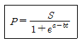
- 현재인구
- 포화인구
- 기준년으로 부터 t년후의 인구
- 기준년으로 부터의 경과년수
(정답률: 알수없음)
29. 취수탑에 관한 설명으로 알맞지 않은 것은?
- 취수탑의 단면이 원형 혹은 타원형인 경우에는 장폭 방향을 흐름방향과 일치토록 설치하여야 한다.
- 탑체의 상단은 계획최고수위보다 1 -1.5m 이상 높아야 한다.
- 취수구의 유입속도는 하천의 경우 1 - 2m/초 정도 되도록 단면적을 설계한다.
- 취수탑의 내경은 필요한 수의 취수구를 적당하게 배치할 수 있는 크기를 가져야 한다.
(정답률: 20%)
30. 급속교반조나 혼화지 등의 설계시 필요한 G값(속도구배)을 구할 때 직접적으로 고려되지 않는 것은? (단, 기계식 교반을 위한 속도 경사식 기준)
- 소요동력
- 조부피
- 물의 점성
- 체류시간
(정답률: 알수없음)
31. 우수배제 계획에서 계획우수량을 산정할 때 고려할 사항이 아닌 것은?
- 유출계수
- 유속계수
- 배수면적
- 확률년수
(정답률: 65%)
32. 하수슬러지 농축조에 대한 다음의 설명 중 틀린 것은?
- 슬러지 스크레이퍼를 설치할 경우 탱크바닥면의 가운데는 5/100 이상이 좋다.
- 슬러지 스크레이퍼가 없는 경우 탱크바닥의 중앙에 호퍼를 설치하되 호퍼측벽의 기울기는 수평의 60°이상으로 한다.
- 농축조의 용량은 계획슬러지량의 48시간 분량이하로 하며 유효수심은 4m이상으로 한다.
- 고형물 부하는 25∼70kg/m2일을 기준으로 하나 슬러지의 특성에 따라 변경될 수 있다.
(정답률: 34%)
33. 굴착 깊이가 얕아 공기와 공사비가 절감되며, 펌프로 양수하는 경우, 양정고(楊程高) 감소, 수위상승(水位上昇)방지 등의 장점이 있어 펌프로 배수하는 지역에 적합한 하수관 접합방식은?
- 관저접합
- 관정접합
- 수면접합
- 관중심접합
(정답률: 알수없음)
34. 다음 중 하수관거의 유속 및 경사에 대하여 맞게 설명한 것은?
- 관거내의 최소유속은 관내벽의 마모에 의한 손상을 방지하고자 설정한 것이다.
- 우수관거 및 합류관거의 유속은 계획우수량에 대하여 최대 1.5m/sec, 최소 0.4m/sec 로 한다.
- 유속과 구배는 하류로 갈수록 점차 증가시켜 부유물이 관거내에 침전되지 않도록 한다.
- 합류관거는 오수관거보다 최소유속을 크게 하여야 한다.
(정답률: 알수없음)
35. 다음 중 하수용 펌프 흡입구의 표준유속은?
- 0.5∼1.0m/sec
- 1.0∼1.5m/sec
- 1.5∼3.0m/sec
- 3.0∼4.0m/sec
(정답률: 알수없음)
36. 급속여과지의 여과속도는 완속여과지의 약 몇 배가 되는가?
- 15배
- 30배
- 60배
- 120배
(정답률: 47%)
37. 계획오수량에 관한 설명 중 틀린 것은?
- 계획시간 최대오수량은 계획1일 최대오수량의 1시간 수량의 1.3∼1.8배이다.
- 지하수량은 계획 1인 1일 평균 오수량의 10∼20%로 한다.
- 합류식의 우천시 계획오수량은 계획시간 최대오수량의 3배이상으로 한다.
- 계획 1일 평균 오수량은 계획 1일 최대 오수량의 70∼80%를 표준으로 한다.
(정답률: 28%)
38. 다음은 펌프의 흡입(하수)관에 대한 기술이다. 옳게 설명한 것은?
- 흡입관은 각 펌프마다 설치할 필요는 없다.
- 흡입관은 수평으로 설치하는 것을 피한다.
- 횡축펌프의 토출관 끝은 마중물을 고려하여 수중에 잠기지 않도록 한다.
- 연결부나 기타 부근에서는 공기의 흡입이 있도록 한다.
(정답률: 알수없음)
39. 직경 2m인 하수관을 매설하려 한다. 성토에 의하여 관에 가해지는 하중을 Marston의 방법에 의해 계산하면? (단, 흙의 밀도 1.9t/m3, 토압계수 C1=1.24, 관의 상부90° 부분에서의 관매설을 위해 굴토한 도랑의 폭=3.3m )
- 약 15.8t/m
- 약 20.7t/m
- 약 25.7t/m
- 약 32.9t/m
(정답률: 알수없음)
40. 관경 1100mm, 동수경사 2.4‰ , 유속 2.15m/sec, 연장 L =76m 일 때, 역syphons의 손실수두는? (단, β = 1.5, α = 0.042m이다.)
- 0.58m
- 0.42m
- 0.32m
- 0.16m
(정답률: 알수없음)
3과목: 수질오염방지기술
41. 다음 중 산업폐수를 실질적, 경제적으로 해결하기 위해 가장 먼저 하여야 할 단계로 적절한 것은?
- 요구사항 즉 관계법규의 파악
- 문제를 해결할 수 있는 기술자의 선택
- 처리방법의 선택과 설계
- 가능한 폐수처리방법의 연구
(정답률: 알수없음)
42. 다음의 생물화학적 인 및 질소제거 공법중 인의 제거만을 주목적으로 개발된 공법은?
- 수정 Bardenpho
- A2/O
- UCT
- phostrip
(정답률: 알수없음)
43. 폐액중의 크롬산을 정량했을때 6가크롬으로서 1000mg/ℓ이었다. 이 폐액을 환원침전법으로 처리하는 경우, 이폐액 20m3을 환원할 때 필요한 아황산나트륨의 이론량은? (단, 크롬원자량 52, 아황산나트륨의 분자량 1262H2CrO4 + 3Na2SO3 + 3H2SO4 → Cr2(SO4)3+ 3Na2SO4 + 5H2O )
- 약 36Kg
- 약 55Kg
- 약 73Kg
- 약 112Kg
(정답률: 알수없음)
44. 폐수내 함유된 NH4+36 mg/L를 제거하기 위하여 이온교환 능력이 100g CaCO3/m3인 양이온 교환수지를 이용하여 1000m3의 폐수를 처리하고자 할 때 필요한 양이온 교환수지의 부피는?
- 1000m3
- 2000m3
- 3000m3
- 4000m3
(정답률: 알수없음)
45. 폭기조 혼합액의 SVI가 170에서 130으로 감소하였다. 처리장 운전시 어떻게 대응하여야 하는가?
- 별다른 조치가 필요없다
- 반송슬러지 양을 감소시킨다
- 폭기시간을 증가시킨다
- 무기응집제를 첨가한다
(정답률: 알수없음)
46. 하루 20,000m3의 유량을 처리하기 위해 조의 깊이가 폭의 1.25배인 정방형 급속혼합조를 설계하려고 한다. 체류시간이 60초이면 급속혼합조의 폭은 얼마로 설계해야 하는가?
- 1.23m
- 2.23m
- 3.23m
- 4.23m
(정답률: 알수없음)
47. 다음은 하수처리장 건설을 위한 시공계획 수립시의 순서도이다. 가장 합리적인 순서로 된 것은?
- 공사목적의이해-설계도서검토-공법의결정-공정계획수립-시공계획작성
- 공사목적의이해-공법의결정-공정계획수립-설계도서검토-시공계획작성
- 공사목적의이해-공정계획수립-설계도서검토-시공계획작성-공법의결정
- 공사목적의이해-설계도서검토-시공계획작성-공정계획수립-공법의결정
(정답률: 50%)
48. 부피가 3000m3인 응집조에서 G값을 50/sec로 유지하는데 필요한 paddle의 이론적 면적은?(단,
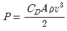
, μ 는 1.139×10-3 N·s/m2, CD는 1.8, paddle 주변 속도 vp는 0.6 m/sec,paddle의 상대속도 v = 0.75 vp, 비중 1.0 )- 52.1m2
- 73.5m2
- 104.2m2
- 130.6m2
(정답률: 알수없음)
49. 질소제거 방법 중 생물학적 질화-탈질공정의 장점이라고 할 수 없는 것은?
- 잠재적 제거효율이 높다
- 공정의 안정성이 높다
- 소요 부지 면적이 적다
- 유기탄소원이 불필요하다
(정답률: 알수없음)
50. 다음의 막공법중 압력차가 추진력이 아닌 것은?
- 역삼투법
- 한외여과법
- 정밀여과법
- 투석법
(정답률: 알수없음)
51. 회전원판법의 특징에 해당되지 않은 것은?
- 운전관리상 조작이 간단하고 소비전력량은 소규모처리시설에서는 표준활성슬러지법에 비하여 적다.
- 질산화가 일어나기 쉬우며 이로 인하여 처리수의 BOD가 낮아진다.
- 활성슬러지법에 비해 이차침전지에서 미세한 SS가 유출되기 쉽고 처리수의 투명도가 나쁘다.
- 살수여상과 같이 파리는 발생하지 않으나 하루살이가 발생하는 수가 있다.
(정답률: 알수없음)
52. 초심층폭기법(Deep Shaft Aeration System)에서 산소전달 효율이 높은 이유와 가장 거리가 먼 것은?
- 순환류의 유속이 빨라서 폐수의 흐름이 난류가 되기 때문이다.
- 반응조의 수온이 낮아지기 때문이다.
- 기포와 미생물이 접촉하는 시간이 길기 때문이다.
- 수압이 증가하기 때문이다.
(정답률: 20%)
53. Chick는 염소소독에 의한 세균의 사멸이 1차반응속도식을 따른다고 하였다. 잔류염소 농도 0.3mg/L에서 2분간에 90%의 세균이 사멸되었다면 같은 농도에서 99.9% 살균을 위해서는 몇분의 시간이 필요한가?
- 5분
- 6분
- 7분
- 8분
(정답률: 47%)
54. 생물학적 처리법 가운데 살수여상법에 대한 설명으로 알맞지 않는 것은?
- 슬러지일령은 부유성장 시스템보다 높아 100일이상의 슬러지일령에 쉽게 도달된다.
- 총괄 관측수율은 전형적인 활성슬러지공정의 60-80% 정도이다
- 덮개없는 여상의 재순환율을 증대시키면 실제로 여상 내의 평균온도가 높아지는 잇점이 있다
- 정기적으로 여상에 살충제를 살포하거나 여상을 침수 토록하여 파리문제를 해결할 수 있다.
(정답률: 알수없음)
55. 다음의 조건에 적합한 장방형 침사지(폭(W) × 길이(L))의 유효길이(L)로서 옳은 것은?
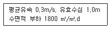
- 약 14.4m
- 약 18.4m
- 약 22.4m
- 약 26.4m
(정답률: 0%)
56. 고농도의 액상 PCB 처리 방법과 가장 거리가 먼 것은?
- 응집침전법
- 연소법
- 자외선조사
- 고온 고압 알칼리 분해
(정답률: 알수없음)
57. G = 200/sec, V = 50 m3, 교반기 효율 80%, μ = 1.35×10-2 g/cm· sec일 때 동력 P(kW)는?
- 3.38 kW
- 3.86 kW
- 33.8 kW
- 38.6 kW
(정답률: 알수없음)
58. 하구오염물질 해석시 사용하는 피크리트수(Peclet number)의 정의는?
- 이류운송율/(확산/이송확산 운송율)
- 이류분해율/(확산/이송확산 분해율)
- 모멘트 확산율/열 확산율
- 모멘트 확산율/질량 확산율
(정답률: 알수없음)
59. 다음 중 VIP 공정으로 가장 적절한 것은?
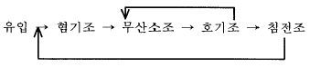
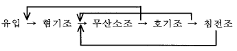
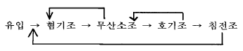
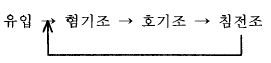
(정답률: 알수없음)
60. 암모니아 제거방법 중 파과점염소처리(Breakpoint chlorination)의 단점과 가장 거리가 먼 것은?
- 용존성 고형물 증가
- 많은 경비 소비
- pH를 10 이상으로 높혀야 함
- THM 등 건강에 해로운 물질 생성
(정답률: 알수없음)
4과목: 수질오염공정시험기준
61. 300㎖ BOD병에 6㎖의 시료를 넣고 희석수로 채운후 용존산소가 8.6㎎/ℓ 이었고 5일후의 용존산소가 5.4㎎/ℓ 였다면 시료의 BOD는 몇㎎/ℓ 인가?
- 120
- 140
- 160
- 180
(정답률: 알수없음)
62. PCB의 측정에서 가스크로마토그래피법을 적용할 때 기구 및 기기의 조건으로 틀린 것은?
- 검출기는 전자포획형검출기
- 컬럼은 유리제로 안지름이 2~4mm
- 검출기 온도는 200~250℃
- 시료주입구 온도는 170~200℃
(정답률: 알수없음)
63. glucose로 COD 1000㎎/L 표준용액을 만들려고한다. 증류수 1L에 함유하는 glucose는 몇 g이 되겠는가? (단, glucose 분자량 = 180)
- 0.8875
- 0.9375
- 0.9875
- 1.0375
(정답률: 19%)
64. 0.025N K2Cr2O7용액 500㎖를 만들려면, K2Cr2O7 몇 g 이 필요한가? (단, K2Cr2O7의 분자량은 294 )
- 0.41g
- 0.51g
- 0.61g
- 0.71g
(정답률: 알수없음)
65. 유도결합플라스마 발광광도법에 관한 기술로서 적합치 아니한 것은?
- 에어졸 상태로 분무되는 시료는 가장 안쪽의 관을 통하여 도너츠모양 플라스마의 가장자리로 도입된다.
- 장치는 시료도입부, 고주파전원부, 광원부, 분광부 연산처리부 및 기록부로 구성되어 있다.
- 보통시료는 6,000-8,000K의 고온 플라스마에 도입되므로 거의 완전한 원자화가 이루어지게 된다.
- 플라스마는 그 자체가 광원으로도 이용되기 때문에 매우 넓은 범위에서의 시료를 측정할 수 있다.
(정답률: 0%)
66. 인산염인 시험법으로 적당한 방법은?
- 염화제일 주석 환원법
- 몰리부덴 블루법
- 인도 페놀법
- 진콘법
(정답률: 알수없음)
67. 폐수 20㎖를 취하여 100℃에서 0.025N - KMnO4 용액의 적정수는 4㎖이었다. 이 폐수의 COD는? (단, 공시험수는 0㎖, 0.025N KMnO4 f : 1.000)
- 16㎎/L
- 40㎎/L
- 80㎎/L
- 60㎎/L
(정답률: 알수없음)
68. 산성 100℃에서 과망간산칼륨에 의한 화학적 산소 요구량을 측정할 때 최종적정 종말점의 색변화는?
- 무색→ 엷은 홍색
- 녹청→ 적갈색
- 남청색→ 무색
- 엷은 청색→ 무색
(정답률: 24%)
69. 다음은 염소이온의 측정원리를 설명한 것이다. ( )안에 알맞는 내용은?
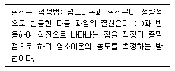
- 크롬산
- 수산화이온
- 염화제일주석
- 차아염소산
(정답률: 알수없음)
70. 색도 시험법(투과율법)의 설명 중 틀린 것은?
- 백금-코발트 표준물질과 아주 다른 색상의 폐하수에서 뿐만 아니라 표준물질과 비슷한 색상의 폐하수에도 적용할 수 있다.
- 아담스-니컬슨의 색도 공식을 근거한다.
- 시각적으로 눈에 보이는 색상을 기준으로 복합적인 색도차를 계산한다.
- 시료중 부유물질은 제거하여야 한다.
(정답률: 알수없음)
71. 수질오염공정시험방법상 총질소측정방법이 아닌 것은?
- 흡광광도법
- 카드뮴환원법
- 환원증류-킬달법
- 데발다합금 환원증류법
(정답률: 알수없음)
72. 시료의 보존방법 중 4℃, H2SO4로 pH2 이하 보존해야 하는 항목과 거리가 먼 것은?
- 화학적 산소요구량
- 암모니아성 질소
- 총인
- 페놀류
(정답률: 40%)
73. 배출허용기준 적합여부를 판정하기 위하여 자동시료채취기로 복수시료를 채취하는 방법으로 알맞는 것은?
- 4시간 이내에 15분이상 간격으로 1회이상 채취하여 일정량의 단일시료로 한다.
- 6시간 이내에 30분이상 간격으로 2회이상 채취하여 일정량의 단일시료로 한다.
- 12시간 이내에 1시간이상 간격으로 4회이상 채취하여 일정량의 단일시료로 한다.
- 24시간 이내에 2시간이상 간격으로 8회이상 채취하여 일정량의 단일시료로 한다.
(정답률: 58%)
74. 위어의 수두가 25㎝, 수로의 폭이 50㎝, 수로의 밑면에서 하부점 까지의 높이가 60㎝인 직각삼각위어의 유량은? (단, 유량계수는 86.2 )
- 2.39 m3/min
- 2.49 m3/min
- 2.59 m3/min
- 2.69 m3/min
(정답률: 10%)
75. 흡광광도법에 의한 페놀류 측정원리를 설명한 것 중 틀린 것은?
- 증류한 시료에 염화암모늄-암모니아 완충액을 넣어pH 10으로 조절한 다음 4-아미노안티피린과 페리시안 칼륨을 넣어 생성된 적색의 안티피린계 색소의 흡광도를 측정한다.
- 수용액에서는 510nm에서 측정한다.
- 클로로포름용액에서는 460nm에서 측정한다.
- 추출법일 때 정량범위는 0.⑤-0.5mg 정도이다.
(정답률: 40%)
76. 이온전극법에서 유리막 전극을 이용하여 측정하는 이온과 거리가 먼 것은?
- Na+
- K+
- NH4+
- Pb2+
(정답률: 알수없음)
77. 수질측정항목과 시료 최대보존기간이 잘못 짝지어진 것은? (순서대로 시료항목-최대보존시간)
- 생물화학적 산소 요구량 - 48시간
- 수소 이온 농도 - 즉시측정
- 6가 크롬 - 6개월
- 대장균군 - 6시간
(정답률: 36%)
78. 시안 측정시 방해물질과 이를 제거할 수 있는 물질을 잘못 짝지은 것은?
- 잔류염소- 아비산나트륨 용액을 첨가
- 황화합물- 과망간산칼륨 용액으로 산화
- 유지류- 중화후 노말헥산으로 추출
- 잔류염소- L-아스코르빈산 용액을 첨가
(정답률: 30%)
79. 흡광도법에서 흡수셀의 재질로 알맞지 않는 것은?
- 석영
- 유리
- 플라스틱
- 실리콘
(정답률: 43%)
80. 하수처리장에 유입하는 하수의 부유물질량(SS)를 측정하였다. 측정한 최초여지의 무게는 1.111g이었다. SS측정법에 따라 시료 200㎖를 여과한 후의 여지의 무게는 1.231g이었다면 유입수의 부유물질 농도는?
- 500mg/ℓ
- 600mg/ℓ
- 700mg/ℓ
- 800mg/ℓ
(정답률: 알수없음)
5과목: 수질환경관계법규
81. 폐수배출시설의 사업장 규모를 1일 폐수배출량을 기준으로 구분하고 있는 바, 다음중 2종 사업장의 배출규모기준은?
- 1일 폐수배출량이 5000m3이상 10000m3미만인 사업장
- 1일 폐수배출량이 2000m3이상, 5000m3미만인 사업장
- 1일 폐수배출량이 700m3이상, 2000m3미만인 사업장
- 1일 폐수배출량이 200m3이상, 700m3미만인 사업장
(정답률: 60%)
82. 시도지사는 지정호소 및 호소수질보전구역이 지정,고시된 때에는 몇년마다 지정호소수질보전계획을 수립하여 환경 부장관에게 승인을 얻어야 하는가?
- 매년
- 2년
- 3년
- 5년
(정답률: 알수없음)
83. 종말처리시설종류별 배수설비의 설치방법 및 구조기준으로 틀린 것은?
- 배수관의 관경은 내경 150mm 이상으로 하여야 한다.
- 배수관은 우수관과 분리하여 우수가 혼합되지 아니 하도록 설치하여야 한다.
- 배수관 입구에는 유효간격이 5mm 이하의 스크린을 설치하여야 한다.
- 배수관이 직선인 부분에는 내경의 120배 이하의 간격으로 맨홀을 설치하여야 한다.
(정답률: 알수없음)
84. 환경부장관 또는 시· 도지사가 측정망 설치계획을 결정·고시한 경우 허가를 받은 것으로 보는 행정행위가 아닌 것은?
- 공원법 규정에 의한 공원의 점· 사용허가
- 하천법 규정에 의한 하천공사시행의 허가
- 하천법 규정에 의한 하천점용의 허가
- 도로법 규정에 의한 도로점용의 허가
(정답률: 알수없음)
85. 초과부과금 산정기준에 관한 설명으로 알맞지 않은 것은?
- 청정지역 및 가지역,나지역,특례지역의 구분은 대통령령으로 정한다.
- 배출허용기준초과율=(배출농도-배출허용기준농도)÷ 배출허용기준농도 × 100
- 유기물질의 오염측정단위는 생물화학적산소요구량과 화학적산소요구량을 말하며 그 중 높은 수치의 배출 농도를 산정기준으로 한다.
- 유기물질 1킬로그램당 부과액은 250원을 기준으로 한다.
(정답률: 알수없음)
86. 폐수처리업자가 등록이 취소되거나 영업정지 명령을 받게 되는 경우라 볼 수 없는 것은?
- 고의 또는 중대한 과실로 폐수처리업을 부실하게한 경우
- 등록후 1년이내에 영업을 개시하지 아니하거나 계속하여 1년이상 영업실적이 없는 경우
- 1년에 2회이상 영업정지 처분을 받는 경우
- 다른 사람에게 등록증을 대여한 경우
(정답률: 50%)
87. 공공수역에 정당한 사유없이 특정수질유해물질 등을 누출· 유출시키거나 버린 자에 대한 처벌기준은?
- 1년이하의 징역 또는 5백만원이하의 벌금
- 2년이하의 징역 또는 1천 만원이하의 벌금
- 3년이하의 징역 또는 1천 5백만원이하의 벌금
- 5년이하의 징역 또는 3천만원이하의 벌금
(정답률: 알수없음)
88. 사업장별 환경관리인의 자격기준에 관한 설명으로 틀린 것은?
- 방지시설 설치면제 사업장은 4,5종 사업장의 관리인을 둘 수 있다.
- 배출시설에서 배출되는 오염물질 등을 공동방지시설에서 처리하게 하는 사업장은 4,5종 사업장의 관리인을 둘 수 있다.
- 연간 90일 미만 조업하는 1,2종 사업장은 3종 사업장의 환경관리인을 선임할 수 있다.
- 3년동안 수질분야 환경관련업무에 직접 종사한 자는 3종사업장의 환경관리인이 될 수 있다.
(정답률: 알수없음)
89. 다음중 배출부과금 감면대상기준으로 틀린 것은?
- 사업장 규모가 5종인 사업자
- 하수종말처리시설에 폐수를 유입하는 사업자
- 당해 부과금 부과기준일 현재 최근 3월이상 방류수수질 기준을 초과하여 오염물질을 배출하지 아니한 사업자
- 배출시설에서 배출하는 폐수를 최종방류구로 방류하기 전에 재이용하는 사업자
(정답률: 알수없음)
90. 하천수질에 관한 환경기준 중 수영용수에 관한 기준으로 틀린 것은?
- BOD (mg/L) - 3 이하
- DO(mg/L) - 5 이상
- SS(mg/L) - 20 이하
- 총 대장균군(총대장균 군수/100mL) - 1000 이하
(정답률: 20%)
91. 특정수질유해물질이 아닌 물질로만 구성된 것은?
- 브롬화합물, 바륨화합물, 플르오르화합물
- 니켈 및 그 화합물, 색소, 셀레늄 및 그 화합물
- 사염화탄소, 인화합물 , 망간 및 그 화합물
- 구리 및 그 화합물, 색소, 세제류
(정답률: 알수없음)
92. 폐수종말처리시설의 방류수수질기준으로 알맞는 부유물질량(mg/L) 기준은? (단, 2007.12.31까지 수질기준)
- 20 이하
- 30 이하
- 40 이하
- 50 이하
(정답률: 25%)
93. [ 환경부 장관은 법의 규정에 따라 호소수질보전구역을 지정하고자 할 때는 지정호소의 계획홍수위선으로부터 ( )미터 이내의 지역중 지정호소의 수질에 미치는 영향이 크다고 인정되는 지역을 지정하여야 한다 ]위 내용은 호소수질보전구역의 지정에 관한 설명이다. ( )안에 알맞는 내용은?
- 200
- 300
- 400
- 500
(정답률: 알수없음)
94. 수질오염 방지시설 중 화학적 처리시설은?
- 산화시설(산화조 또는 산화지)
- 접촉조
- 응집시설
- 살균시설
(정답률: 알수없음)
95. 다음의 위임업무보고사항 중 보고횟수가 다른 것은?
- 과징금 부과실적
- 과징금 징수실적 및 체납처분현황
- 폐수처리업에 대한 등록, 지도단속실적 및 처리실적현황
- 폐수위탁, 자가처리현황 및 처리실적
(정답률: 알수없음)
96. 환경관리인 교육에 관한 설명으로 알맞는 것은?
- 환경관리인의 교육기관은 국립환경연구원이다.
- 환경관리인과정은 유역환경청장이 교육대상자를 선발 하여야 한다
- 교육대상자로 선발된 환경관리인은 교육개시 3일전까지 교육기관에 등록을 하여야 한다
- 환경부장관은 교육계획을 매년 1월31일까지 시도지사등에게 통보하여야 한다.
(정답률: 알수없음)
97. 1종 사업장으로서 배출허용기준을 처음 위반한 경우 배출 부과금 산정시 위반횟수별 부과되는 계수는? (단, 사업장 규모: 10,000m3/day 이상인 경우)
- 2.0
- 1.8
- 1.6
- 1.4
(정답률: 알수없음)
98. 오염물질 희석처리를 인정받을 수 있는 경우와 가장 거리가 먼 것은?
- 폐수의 염분이 높아 원래의 상태로는 생물화학적 처리가 어려운 경우
- 폐수의 유기물 농도가 높아 원래의 상태로는 생물 화학적 처리가 어려운 경우
- 폭발의 위험이 있어 원래의 상태로는 화학적 처리가 어려운 경우
- 폐수의 부유물질 농도가 높아 원래의 상태로는 화학적 처리가 어려운 경우
(정답률: 알수없음)
99. 다음중 한강수계관리위원회 위원이 아닌 자는?
- 서울특별시장
- 인천광역시장
- 건설교통부장관
- 한국수자원공사 사장
(정답률: 47%)
100. 수산물양식시설 중 가두리식 양식어장 설치 관리자가 하여야 할 시설설치 또는 조치에 관한 내용과 가장 거리가 먼 것은?
- 사료찌꺼기, 배설물등의 적정처리를 위한 오염방지 시설(침전시설등)을 설치하여야 한다.
- 부상사료 유실방지대를 수표면 상,하로 각각 10cm이상 높이로 설치하여야 한다.
- 분뇨조를 갖춘 변소를 설치하여야 한다.
- 폐사어는 지체없이 수거, 육상에 운반하여 수질오염이 발생되지 아니하도록 안정처리하여야 한다.
(정답률: 알수없음)